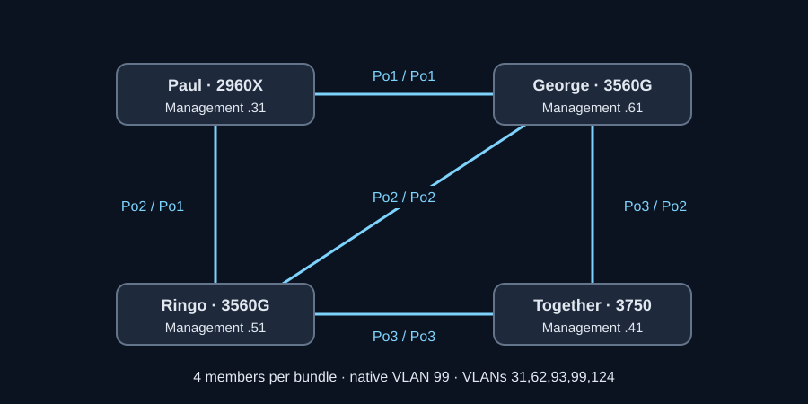
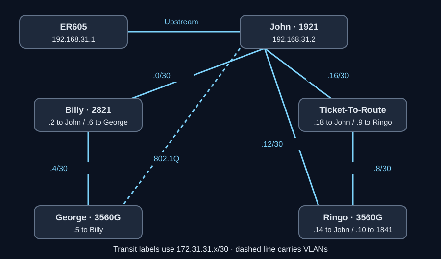

A larger routing and switching lab
I expanded the lab to three routers and four switches, added an IP phone, and used a Debian VM as a working network service endpoint. The hardware gives me several paths to compare and enough room to break down problems by layer.
Snapshot: November 16, 2026, with later corrections reported during the session. Interface states and forwarding choices can change as I work through new exercises.
| Device | Platform | Current role |
|---|---|---|
| John | Cisco 1921 | Upstream router and VLAN routing |
| Billy | Cisco 2821 | Routed links to John and George |
| Ticket-To-Route | Cisco 1841 | Routed links to John and Ringo |
| Paul | Cisco 2960X | Access switch; VLAN 31 STP root |
| George and Ringo | Cisco 3560G switches | LACP trunks, routed ports, VLAN 31 HSRP |
| Switch Together | Cisco 3750 | Phone and AP access; STP root for 62/93/99/124 |
Switching connections

| Link | Port channels | Physical members |
|---|---|---|
| Paul ↔ George | Paul Po1 ↔ George Po1 | Gi1/0/13–16 ↔ Gi0/13–16 |
| Paul ↔ Ringo | Paul Po2 ↔ Ringo Po1 | Gi1/0/17–20 ↔ Gi0/17–20 |
| George ↔ Ringo | Po2 on each switch | Gi0/25–28 on each end |
| George ↔ 3750 | George Po3 ↔ 3750 Po2 | Gi0/33–36 ↔ Fa1/0/33–36 |
| Ringo ↔ 3750 | Po3 on each switch | Gi0/37–40 ↔ Fa1/0/37–40 |
All five bundles showed SU with four P members. They carry VLANs 31, 62, 93, 99, and 124 with native VLAN 99. A healthy bundle can still be blocked by STP for particular VLANs.
Routed connections

| Network | Endpoint A | Endpoint B |
|---|---|---|
| 172.31.31.0/30 | John Gi0/0: .1 | Billy Gi0/1: .2 |
| 172.31.31.4/30 | George Gi0/2: .5 | Billy Gi0/0: .6 |
| 172.31.31.8/30 | 1841 Fa0/1: .9 | Ringo Gi0/2: .10 |
| 172.31.31.12/30 | John Fa0/0/0: .13 | Ringo Gi0/1: .14 |
| 172.31.31.16/30 | John Gi0/1: .17 | 1841 Fa0/0: .18 |
Addresses in the last two columns share the 172.31.31 prefix. The 1841’s change to .9 was reported after identifying the subnet mismatch; a post-change ping was not captured.
John’s upstream interface is 192.168.31.2/25, with a default route through the ER605 at 192.168.31.1. John’s Fa0/0/1 trunks to George Gi0/1. OSPF on the routed links is a planned exercise.
VLANs and endpoints
| VLAN | Subnet | Gateway / endpoints |
|---|---|---|
| 31 · Management | 10.31.31.0/25 | John .2; HSRP VIP .1; Paul .31, 3750 .41, Ringo .51, George .61 |
| 62 · Linux | 10.31.62.0/25 | Gateway: John .1; Debian/Asterisk: .124 |
| 93 · Windows | 10.31.93.0/25 | Gateway: John .1; Windows host port: George Gi0/47 |
| 99 · Native / parking | No routed subnet documented | Native on switch bundles; untagged data VLAN on phone port |
| 124 · Voice | 10.31.124.0/25 | Phone .31; gateway plan: John .1 |
Ringo was verified Active and George Standby for the VLAN 31 HSRP virtual gateway. The voice gateway was designed as John’s Fa0/0/1.124 subinterface; subsequent phone registration and audio tests confirmed connectivity to the PBX, but a final gateway configuration capture was not supplied.